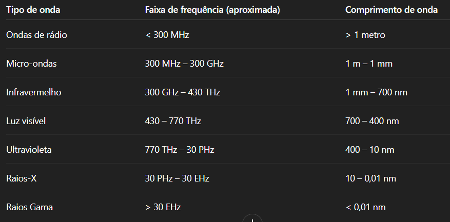

As ondas eletromagnéticas estão presentes em praticamente todos os aspectos da vida moderna. Desde a luz visível até as transmissões de rádio, micro-ondas e raios-X, elas desempenham papéis fundamentais na comunicação, medicina, astronomia e muito mais. Este trabalho tem como objetivo apresentar os conceitos fundamentais das ondas eletromagnéticas, suas propriedades, classificações e aplicações práticas.
Ondas eletromagnéticas são oscilações simultâneas de campos elétricos e magnéticos que se propagam no espaço, transportando energia. Essas ondas não necessitam de um meio material para se propagar — ao contrário das ondas mecânicas — e podem viajar pelo vácuo. Elas foram previstas teoricamente por James Clerk Maxwell, em 1865, por meio das equações de Maxwell, e comprovadas experimentalmente por Heinrich Hertz.
O espectro eletromagnético representa a faixa de todas as frequências possíveis das ondas eletromagnéticas. Ele é dividido em diversas regiões:
As aplicações das ondas eletromagnéticas são vastas e incluem: